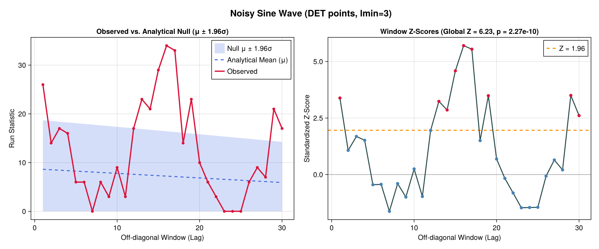
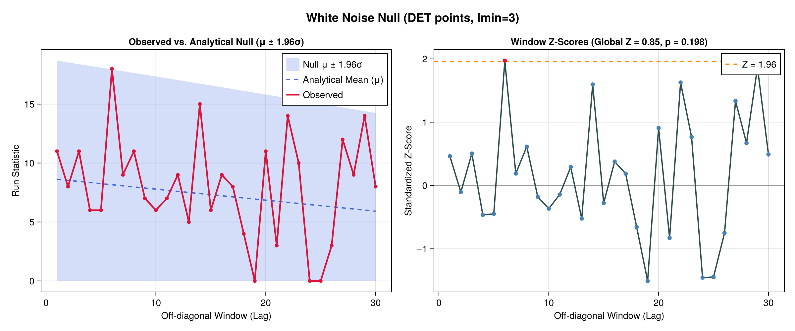

Vignette: Analytical Hypothesis Testing in RQA via Marked BGF Moments
Standard Recurrence Quantification Analysis (RQA) metrics—such as Determinism ($DET$), diagonal line counts, and Poincaré trapping times—typically require computationally expensive surrogate shuffling to estimate null distributions.
By modeling off-diagonal segments of length $n_i = N - i$ as weighted Bernoulli sequences with recurrence probability $p = RR$ and non-recurrence probability $q = 1 - p$, SymbolicInference.jl uses Bivariate Generating Functions (BGFs) from AnalyticComb.jl (Flajolet & Sedgewick, Chapter III) where $z$ marks diagonal length $n_i$ and $u$ marks the run statistic $\chi$:
- Determinism Points (
metric="determinism"/mode="length_ge"): $u$ marks the total number of recurrence points belonging to consecutive diagonal runs of length $\ge l_{\min}$: $W(z, u) = \frac{1 + \beta(z, u)}{1 - qz(1 + \beta(z, u))}, \qquad \beta(z, u) = \frac{pz - p^{l_{\min}} z^{l_{\min}}}{1 - pz} + \frac{(upz)^{l_{\min}}}{1 - upz}$ - Diagonal Motif Count (
metric="motif_count"/mode="count_ge"): $u$ marks the number of distinct runs of length $\ge l_{\min}$: $W(z, u) = \frac{1 + (u - 1) p^{l_{\min}} z^{l_{\min}}}{1 - (p + q)z - (u - 1) q p^{l_{\min}} z^{l_{\min}+1}}$ - Line-Length Histogram (
metric="exact_length"/mode="count_eq"): $u$ marks the number of runs of exact length $l_{\min}$.
Differentiating $W(z, u)$ with respect to $u$ at $u = 1$ yields the exact analytical mean $\mu_i$ and variance $\sigma_i^2$ for every off-diagonal window $i$, as well as an aggregated global test across a band of windows: $Z_{\text{global}} = \frac{\sum_i X_i - \sum_i \mu_i}{\sqrt{\sum_i \sigma_i^2}}$
Step-by-Step Walkthrough: Noisy Periodic Signal vs. White Noise
using Random, Distributions, RecurrenceAnalysis, SymbolicInference
# 1. Simulate a noisy sine wave (period ≈ 15.7 samples) and a pure white-noise series
rng = Random.MersenneTwister(42)
t = collect(0:0.4:(2 * pi * 6))
sin_ts = sin.(t)
noise_ts = rand(rng, Normal(0, 0.45), length(t))
noisy_sin = sin_ts .+ noise_ts
# 2. Build Recurrence Matrices at fixed recurrence rate RR = 0.35
rm_noisy_sin = RecurrenceMatrix(noisy_sin, 0.35; fixedrate=true)
rm_white = RecurrenceMatrix(noise_ts, 0.35; fixedrate=true)
# 3. Run exact BGF moment-based RQA hypothesis tests (lmin = 3, lags 1..30)
res_sin = rqa_moments_test(rm_noisy_sin; lmin=3, window_range=collect(1:30), metric="determinism")
res_white = rqa_moments_test(rm_white; lmin=3, window_range=collect(1:30), metric="determinism")
# Inspect global band summary
res_sin["Global"]
# (observed = 379.0, expected = 218.13, var = 665.85, std = 25.80,
# z_score = 6.234, p_value = 2.27e-10, p_value_twosided = 4.54e-10,
# chebyshev_bound = 0.0251, det_observed = 0.4714, det_expected = 0.2666)
res_white["Global"]
# (observed = 240.0, expected = 218.13, var = 665.85, std = 25.80,
# z_score = 0.848, p_value = 0.198, p_value_twosided = 0.397,
# chebyshev_bound = 0.582, det_observed = 0.2857, det_expected = 0.2666)Visualizing Per-Window Moments and Z-Scores
Using plot_rqa_moments, we can compare the observed run statistics against the exact analytical $\mu_i \pm 1.96\sigma_i$ confidence band across lags:
fig_sin = plot_rqa_moments(res_sin; title_prefix="Noisy Sine Wave (DET points, lmin=3)")
fig_white = plot_rqa_moments(res_white; title_prefix="White Noise Null (DET points, lmin=3)")Noisy Sine Wave ($Z_{\text{global}} = 6.23, p = 2.27 \times 10^{-10}$)
Notice how the observed determinism points break sharply above the analytical $\mu \pm 1.96\sigma$ envelope at lag $1$ (short-range autocorrelation), lags $13\text{–}19$ (first harmonic period $\approx 15.7$), and lags $29\text{–}30$ (second harmonic period):

White Noise Control ($Z_{\text{global}} = 0.85, p = 0.198$)
At the exact same recurrence rate ($RR = 0.35$), pure white noise stays confined within the analytical $\mu \pm 1.96\sigma$ null band across all 30 off-diagonals, confirming calibration without needing surrogate permutations:

Testing Other RQA Parameters (motif_count, exact_length, and "poincare")
You can also test the count of diagonal motifs (metric="motif_count"), the exact line-length histogram $P(l)$ (metric="exact_length"), or Poincaré non-recurrence trapping runs (seqs="poincare"):
# Count of diagonal lines of length >= 3
motifs_cnt = rqa_moments_test(rm_noisy_sin; lmin=3, window_range=collect(1:30), metric="motif_count")
# Poincaré (non-recurrence / white-space) runs of length >= 4
poincare_test = rqa_moments_test(rm_noisy_sin; lmin=4, window_range=collect(1:30), seqs="poincare", metric="determinism")